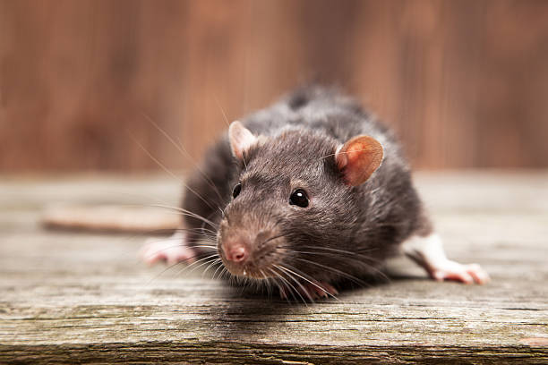
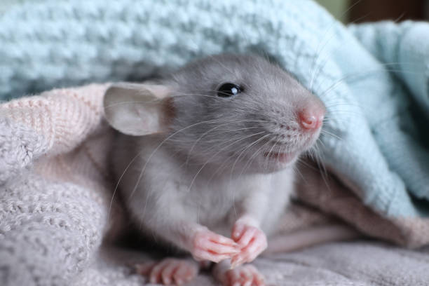
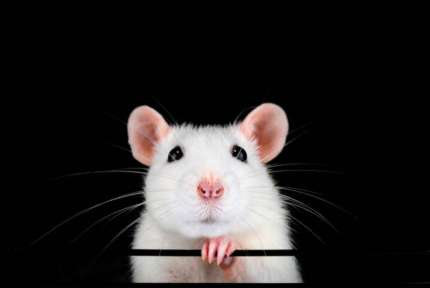

<!DOCTYPE html>
<html lang="en">

<head>
    <meta charset="UTF-8">
    <meta name="viewport" content="width=device-width, initial-scale=1.0">
    <title>Document</title>

    <link rel="stylesheet" href="https://cdn.jsdelivr.net/npm/bootstrap@5.3.3/dist/css/bootstrap.min.css"
        rel="stylesheet" integrity="sha384-QWTKZyjpPEjISv5WaRU9OFeRpok6YctnYmDr5pNlyT2bRjXh0JMhjY6hW+ALEwIH"
        crossorigin="anonymous">
    <script src="https://cdn.jsdelivr.net/npm/bootstrap@5.3.3/dist/js/bootstrap.bundle.min.js"
        integrity="sha384-YvpcrYf0tY3lHB60NNkmXc5s9fDVZLESaAA55NDzOxhy9GkcIdslK1eN7N6jIeHz"
        crossorigin="anonymous"></script>
    <link rel="stylesheet" href="css/estilopag.css">

</head>
<body>
</body>

</html>
<body>
    <!-- Header -->
    <header>
        <h1>La madriguera </h1>
    </header>

    <!-- Navegación -->
    <nav>
        <nav class="navbar navbar-expand-lg bg-body-tertiary">
            <div class="container-fluid">
              <a class="navbar-brand" href="index1.html">La madriguera</a>
              <button class="navbar-toggler" type="button" data-bs-toggle="collapse" data-bs-target="#navbarSupportedContent" aria-controls="navbarSupportedContent" aria-expanded="false" aria-label="Toggle navigation">
                <span class="navbar-toggler-icon"></span>
              </button>
              <div class="collapse navbar-collapse" id="navbarSupportedContent">
                <ul class="navbar-nav me-auto mb-2 mb-lg-0">
                  <li class="nav-item">
                    <a class="nav-link active" aria-current="page" href="index1.html">Inicio</a>
                  </li>
                  <li class="nav-item">
                    <a class="nav-link" href="index2.html">Alimentacion</a>
                  </li>
                  <li class="nav-item dropdown">
                    <a class="nav-link dropdown-toggle" href="#" role="button" data-bs-toggle="dropdown" aria-expanded="false">
                      Habitat
                    </a>
                    <ul class="dropdown-menu">
                      <li><a class="dropdown-item" href="index3.html">En cautiverio</a></li>
                      <li><a class="dropdown-item" href="#">En la vida salvaje</a></li>
                    
                      
                    </ul>
                  </li>
                  <li class="nav-item">
                    <a class="nav-link disabled" aria-disabled="true"></a>
                  </li>
                </ul>
                <form class="d-flex" role="search">
                  <input class="form-control me-2" type="search" placeholder="Buscar" aria-label="Search">
                  <button class="btn btn-outline-success" type="submit">Buscar</button>
                </form>
              </div>
            </div>
          </nav>
    </nav>

    <!-- Contenido principal de la homepage -->
    <main>
        
        <!doctype html>
        <html lang="en" data-bs-theme="auto">
          <head><script src="../assets/js/color-modes.js"></script>
        
            <meta charset="utf-8">
            <meta name="viewport" content="width=device-width, initial-scale=1">
            <meta name="description" content="">
            <meta name="author" content="Mark Otto, Jacob Thornton, and Bootstrap contributors">
            <meta name="generator" content="Hugo 0.122.0">
            <title>Blog Template · Bootstrap v5.3</title>
        
            <link rel="canonical" href="https://getbootstrap.com/docs/5.3/examples/blog/">
        
            
        
            <link rel="stylesheet" href="https://cdn.jsdelivr.net/npm/@docsearch/css@3">
        
        <link href="../assets/dist/css/bootstrap.min.css" rel="stylesheet">
        
            
            <!-- Custom styles for this template -->
            <link href="https://fonts.googleapis.com/css?family=Playfair&#43;Display:700,900&amp;display=swap" rel="stylesheet">
            <!-- Custom styles for this template -->
            <link href="blog.css" rel="stylesheet">
          </head>
          <body>
            <svg xmlns="http://www.w3.org/2000/svg" class="d-none">
              <symbol id="check2" viewBox="0 0 16 16">
                <path d="M13.854 3.646a.5.5 0 0 1 0 .708l-7 7a.5.5 0 0 1-.708 0l-3.5-3.5a.5.5 0 1 1 .708-.708L6.5 10.293l6.646-6.647a.5.5 0 0 1 .708 0z"/>
              </symbol>
              <symbol id="circle-half" viewBox="0 0 16 16">
                <path d="M8 15A7 7 0 1 0 8 1v14zm0 1A8 8 0 1 1 8 0a8 8 0 0 1 0 16z"/>
              </symbol>
              <symbol id="moon-stars-fill" viewBox="0 0 16 16">
                <path d="M6 .278a.768.768 0 0 1 .08.858 7.208 7.208 0 0 0-.878 3.46c0 4.021 3.278 7.277 7.318 7.277.527 0 1.04-.055 1.533-.16a.787.787 0 0 1 .81.316.733.733 0 0 1-.031.893A8.349 8.349 0 0 1 8.344 16C3.734 16 0 12.286 0 7.71 0 4.266 2.114 1.312 5.124.06A.752.752 0 0 1 6 .278z"/>
                <path d="M10.794 3.148a.217.217 0 0 1 .412 0l.387 1.162c.173.518.579.924 1.097 1.097l1.162.387a.217.217 0 0 1 0 .412l-1.162.387a1.734 1.734 0 0 0-1.097 1.097l-.387 1.162a.217.217 0 0 1-.412 0l-.387-1.162A1.734 1.734 0 0 0 9.31 6.593l-1.162-.387a.217.217 0 0 1 0-.412l1.162-.387a1.734 1.734 0 0 0 1.097-1.097l.387-1.162zM13.863.099a.145.145 0 0 1 .274 0l.258.774c.115.346.386.617.732.732l.774.258a.145.145 0 0 1 0 .274l-.774.258a1.156 1.156 0 0 0-.732.732l-.258.774a.145.145 0 0 1-.274 0l-.258-.774a1.156 1.156 0 0 0-.732-.732l-.774-.258a.145.145 0 0 1 0-.274l.774-.258c.346-.115.617-.386.732-.732L13.863.1z"/>
              </symbol>
              <symbol id="sun-fill" viewBox="0 0 16 16">
                <path d="M8 12a4 4 0 1 0 0-8 4 4 0 0 0 0 8zM8 0a.5.5 0 0 1 .5.5v2a.5.5 0 0 1-1 0v-2A.5.5 0 0 1 8 0zm0 13a.5.5 0 0 1 .5.5v2a.5.5 0 0 1-1 0v-2A.5.5 0 0 1 8 13zm8-5a.5.5 0 0 1-.5.5h-2a.5.5 0 0 1 0-1h2a.5.5 0 0 1 .5.5zM3 8a.5.5 0 0 1-.5.5h-2a.5.5 0 0 1 0-1h2A.5.5 0 0 1 3 8zm10.657-5.657a.5.5 0 0 1 0 .707l-1.414 1.415a.5.5 0 1 1-.707-.708l1.414-1.414a.5.5 0 0 1 .707 0zm-9.193 9.193a.5.5 0 0 1 0 .707L3.05 13.657a.5.5 0 0 1-.707-.707l1.414-1.414a.5.5 0 0 1 .707 0zm9.193 2.121a.5.5 0 0 1-.707 0l-1.414-1.414a.5.5 0 0 1 .707-.707l1.414 1.414a.5.5 0 0 1 0 .707zM4.464 4.465a.5.5 0 0 1-.707 0L2.343 3.05a.5.5 0 1 1 .707-.707l1.414 1.414a.5.5 0 0 1 0 .708z"/>
              </symbol>
            </svg>
        
            <div class="dropdown position-fixed bottom-0 end-0 mb-3 me-3 bd-mode-toggle">
              <button class="btn btn-bd-primary py-2 dropdown-toggle d-flex align-items-center"
                      id="bd-theme"
                      type="button"
                      aria-expanded="false"
                      data-bs-toggle="dropdown"
                      aria-label="Toggle theme (auto)">
                <svg class="bi my-1 theme-icon-active" width="1em" height="1em"><use href="#circle-half"></use></svg>
                <span class="visually-hidden" id="bd-theme-text">Toggle theme</span>
              </button>
              <ul class="dropdown-menu dropdown-menu-end shadow" aria-labelledby="bd-theme-text">
                <li>
                  <button type="button" class="dropdown-item d-flex align-items-center" data-bs-theme-value="light" aria-pressed="false">
                    <svg class="bi me-2 opacity-50" width="1em" height="1em"><use href="#sun-fill"></use></svg>
                    Light
                    <svg class="bi ms-auto d-none" width="1em" height="1em"><use href="#check2"></use></svg>
                  </button>
                </li>
                <li>
                  <button type="button" class="dropdown-item d-flex align-items-center" data-bs-theme-value="dark" aria-pressed="false">
                    <svg class="bi me-2 opacity-50" width="1em" height="1em"><use href="#moon-stars-fill"></use></svg>
                    Dark
                    <svg class="bi ms-auto d-none" width="1em" height="1em"><use href="#check2"></use></svg>
                  </button>
                </li>
                <li>
                  <button type="button" class="dropdown-item d-flex align-items-center active" data-bs-theme-value="auto" aria-pressed="true">
                    <svg class="bi me-2 opacity-50" width="1em" height="1em"><use href="#circle-half"></use></svg>
                    Auto
                    <svg class="bi ms-auto d-none" width="1em" height="1em"><use href="#check2"></use></svg>
                  </button>
                </li>
              </ul>
            </div>
        
            
        <svg xmlns="http://www.w3.org/2000/svg" class="d-none">
          <symbol id="aperture" fill="none" stroke="currentColor" stroke-linecap="round" stroke-linejoin="round" stroke-width="2" viewBox="0 0 24 24">
            <circle cx="12" cy="12" r="10"/>
            <path d="M14.31 8l5.74 9.94M9.69 8h11.48M7.38 12l5.74-9.94M9.69 16L3.95 6.06M14.31 16H2.83m13.79-4l-5.74 9.94"/>
          </symbol>
          <symbol id="cart" viewBox="0 0 16 16">
            <path d="M0 1.5A.5.5 0 0 1 .5 1H2a.5.5 0 0 1 .485.379L2.89 3H14.5a.5.5 0 0 1 .49.598l-1 5a.5.5 0 0 1-.465.401l-9.397.472L4.415 11H13a.5.5 0 0 1 0 1H4a.5.5 0 0 1-.491-.408L2.01 3.607 1.61 2H.5a.5.5 0 0 1-.5-.5zM3.102 4l.84 4.479 9.144-.459L13.89 4H3.102zM5 12a2 2 0 1 0 0 4 2 2 0 0 0 0-4zm7 0a2 2 0 1 0 0 4 2 2 0 0 0 0-4zm-7 1a1 1 0 1 1 0 2 1 1 0 0 1 0-2zm7 0a1 1 0 1 1 0 2 1 1 0 0 1 0-2z"/>
          </symbol>
          <symbol id="chevron-right" viewBox="0 0 16 16">
            <path fill-rule="evenodd" d="M4.646 1.646a.5.5 0 0 1 .708 0l6 6a.5.5 0 0 1 0 .708l-6 6a.5.5 0 0 1-.708-.708L10.293 8 4.646 2.354a.5.5 0 0 1 0-.708z"/>
          </symbol>
        </svg>
        
        <div class="container">
          <header class="border-bottom lh-1 py-3">
            </div>
          </header>
        </div>
        
        <main class="container">
            
          
        
          <div class="row g-5">
            <div class="col-md-8">
              <h3 class="pb-4 mb-4 fst-italic border-bottom">
                Alimentacion</h3>
                <p>Las ratas son en la naturaleza omnívoras por lo que comen alimentos de origen animal y vegetal.
                  La base de la alimentación debe ser un pienso seco a base de semillas que se debe complementar con un aporte de alimento fresco vegetal.
                  La proteína puede ser de origen animal o vegetal. Los piensos comerciales suelen aportar proteína de origen animal.
                  
                  <ul>- 80% Pienso base (mezcla casera o pienso comercial). Incluye semillas y proteína animal
                    </ul>
                    <ul> - 20% Vegetales frescos (frutas y verduras). ver lista de alimentos aptos.</ul>
                    <ul>- Suplemento alimentos ricos en vitamina D si no reciben luz solar.</ul>
                  
                  Las ratas no comen heno, a diferencia de algunos otros roedores.
                  
                  Las ratas son desconfiadas con las comidas desconocidas y normalmente solo prueban un poco para ver cómo les sienta. También suelen evitar los sabores amargos. Las crías aprenden de su madre qué comidas son adecuadas y cuáles deben evitar.
                  
                  Las ratas no pueden vomitar.
                  
                  Las ratas producen 2 tipos de heces: las que vemos y otras blandas llamadas cecotrofos que provienen de la digestión bacteriana en el ciego de materia que la rata no puede digerir. Estas heces las comen directamente del ano y son una fuente de nutrientes. No debemos asustarnos si alguna vez no las comen y las encontramos, aunque normalmente no las llegaremos a ver nunca.</p>
                <hr>
                <h3>Pienso</h3>
                <p>La composición del pienso base debe ser:

                  Composición  	Ratas adultas: Proteína	13-14% Grasa	3-4% Calcio	0,5%	
                  Ratas en crecimiento: Proteína		18-20% Grasa		4-6% Calcio		1%.

                  En caso de realizar mezclas caseras o de piensos comerciales que tengan diferentes elementos para elegir, debemos asegurarnos de que comen todo. Si dejan algunos ingredientes sin comer, lo que comen ya no está equilibrado. Por tanto, o bien no reponemos la comida hasta que hayan comido todo, o bien cambiamos la mezcla.
                  El diseño de una dieta equilibrada para rata necesita de ciertos conocimientos así que, en caso de no tenerlos, buscaremos un pienso comercial que tenga la composición más adecuada posible.
                  
                  Pienso recomendado: Bunny Rat Traum Basic
                  
                  Es muy importante respetar las fechas de caducidad de los piensos y no guardar las mezclas caseras demasiado tiempo. También es importante almacenar los piensos y mezclas en lugares frescos y secos para evitar la proliferación de hongos que producen micotoxinas.</p>
                <blockquote class="blockquote">
                  <p></p>
                </blockquote>
                <p></p>
                <h3>Premios</h3>
                <p>Las chuches o premios comerciales que se suelen encontrar en las tiendas no son muy saludables. No solo engordan, sino que pueden ser dañinos para sistema digestivo.
                  Como alternativa saludable podemos usar semillas, frutos secos o fruta deshidratada. Todo ello sin azúcar, sal ni ningún otro aditivo.
                <h3>Vitaminda D</h3>
                <p>Los piensos caseros y algunas mezclas comerciales no llegan la cantidad de vitamina D que necesita una rata (1000 UI/ kg de comida). La vitamina D se puede conseguir por exposición a la luz solar (en concreto a los rayos UVB) y las ratas son muy eficientes en este mecanismo. Si las ratas no reciben luz solar directa (no a través de cristales) pueden necesitar un aporte extra de vitamina D. Para asegurar el aporte necesario de vitamina D se les puede dar huevo, salmón, aceite de salmón, aceite de hígado de bacalao, hígado de ternera, pescado o setas. Lo más adecuado para evitar exceso de otros nutrientes es la mezcla de diferentes fuentes de vitamina D.

                  La deficiencia de vitamina D en ratas favorece la aparición o empeoramiento de múltiples enfermedades, entre ellas cáncer, problemas de huesos, problemas de corazón y enfermedades autoinmunes. También se relaciona con una menor longevidad en ratas macho.</p>
              
                <hr>
                <h2>Alimentos permitidos</h2>
                <p>
                  <H4>Cereales</H4>
                  <ul> • Amaranto. </ul>
                  <ul>• Arroz. Cocido o en copos. Nunca grano. También fideos de arroz cocidos.</ul>
                  <ul> • Avena. También copos de avena sin azúcar.</ul>
                  <ul>• Cebada.</ul>
                  <ul> • Centeno.</ul>
                  <ul> • Farro.</ul>
                  <ul>• Maíz. Poca cantidad. También copos de maíz sin azúcar.</ul>
                  <ul>• Mijo.</ul>
                  <ul>• Trigo. Poca cantidad. También fideos de trigo cocidos.</ul>
                  <ul> • Trigo sarraceno.</ul>
                  <ul>  • Espelta.</ul>
                  
                 <h4> Otras semillas</h4>
                  <ul>• Amapola.</ul>
                  <ul>• Ballica.</ul>
                  <ul>• Cáñamo.</ul>
                  <ul>• Cártamo.</ul>
          <ul>• Dáctilo.</ul>
                  <ul>• Diente de león.</ul>
                  <ul>• Eneldo.</ul>
                  <ul>• Hinojo.</ul>
                  <ul>• Perejil.</ul>
                
                  
                  <h4>Legumbres cocidas.</h4>
                  <ul>• Judías y habas cocidas.</ul>
                  <ul>• Lentejas cocidas.</ul>
                  <ul>• Guisantes cocidos.</ul>
                  
                  <h4>Frutos secos y semillas</h4>
                  Cantidades muy restringidas: equivalente a 1 semilla o 1/4 de nuez al día.
                  
                  <ul>• Almendra dulce.</ul>
                 <ul> • Avellana.</ul>
                 <ul> • Cacahuete.</ul>
                  <ul>• Nueces.</ul>
                 <ul> • Nuez de pecan.</ul>
                  <ul>• Nuez de macadamia.</ul>
                  <ul>• Semillas de girasol.</ul>
                  
                  
                  <h4>Frutas y verduras</h4>
                  <ul>• Acelga.</ul>
                  <ul>• Alcachofa cocida.</ul>
                  <ul>• Apio.</ul>
                  <ul>• Arándanos. Fruta y hojas.</ul>
                  <ul>• Batata cocida. Nunca cruda.</ul>
                 <ul> • Brócoli.</ul>
                  <ul>• Calabacín.</ul>
                  <ul>• Calabaza.</ul>
                  <ul>• Canónigos.</ul>
                  <ul>• Chirivía.</ul>
                  <ul>• Coliflor.</ul>
                  <ul> • Espárrago.</ul>
                 
                 <ul> • Espinaca.</ul>
                  <ul>• Fresa. Fruta y hojas.</ul>
                  
                  
                 <h4>Plantas</h4>
                  
                  <ul>• Albahaca ( Ocimum basilicum ).</ul>
                <ul>  • Alfalfa ( Medicago sativa )</ul>
                  <ul>• Bolsa de pastor (Capsella bursa-pastoris ). No dar a hembras preñadas.</ul>
                 <ul> • Caléndula ( Calendula officinalis ).</ul>
                 <ul> • Camomila ( Chamaemelum nobile ).</ul>
                  <ul>• Diente de león ( Taraxacum officinale ).</ul>
                  <ul>• Eneldo ( Anethum graveolens ).</ul>
                  <ul>• Equinacea ( Equinacea purpurea ).</ul>
                  <ul>• Aciano ( Centaurea cyanus ).</ul>
                  <ul>• Girasol ( Helianthus annuus ). Toda la planta.</ul>
                  <ul> • Menta ( Mentha spp. ).</ul>
                  
                  
                  <h4>Alimentos animales</h4>
                  2-3 veces por semana.
                  
                 <ul>• Chuches de gato (sin taurina añadida).</ul> 
                  <ul>• Galletas para perro.</ul>
                  <ul>• Gambas.</ul>
                  <ul> • Grillos.</ul>
                  <ul>• Gusanos de la harina.</ul>
                  <ul>• Huevo cocido.</ul>
                 <ul> • Insectos secos.</ul>
                  </p>
                  <hr>
                  <h3>Alimentos no permitidos</h3>
                <p><ul>• Ajo. Tóxico.</ul>
                  <ul>• Alcachofa cruda.</ul>
                  <ul>• Almendras amargas. Contienen cianuro.</ul>
                  <ul>• Altramuces.</ul>
                  <ul>• Batata cruda.</ul>
                 <ul> • Berenjena.</ul>
                  <ul>• Cacao.</ul>
                  <ul>• Café. Tóxico.</ul>
                 <ul> • Caqui.</ul>
                  <ul>• Cebolla. Tóxico.</ul>
                  <ul>• Cebollino. Tóxico.</ul>
                  <ul>• Cereza. Alto contenido en azúcar. Huesos contienen cianuro.</ul>
                  <ul>• Chirimoya.</ul>
                 <ul> • Cilantro.</ul>
                  <ul>• Ciruela. Alto contenido en azúcar. Huesos contienen cianuro.</ul>
                 <ul> • Col. Gases.</ul>
                 <ul> • Especias.</ul>
                 <ul> • Garbanzos.</ul>
                 <ul> • Granada.</ul>
                 <ul> • Guayaba.</ul>
                 <ul> • Guisantes crudos.</ul>
                 <ul> • Jamón.</ul>
                  <ul>• Judías crudas.</ul>
                 <ul> • Habas crudas.</ul>
                  <ul>• Leche. No la pueden digerir.</ul>
                  <ul>• Lentejas crudas.</ul>
                  </p>
                  <h3>Citricos</h3>
                  <p>La piel de los cítricos contiene un compuesto llamado d-limoneno (responsable de su olor) que se ha demostrado que es cancerígeno en ratas macho. El d-limoneno que contienen los aceites de la piel de los cítricos reacciona con una proteína llamada alfa2u-globulina que se encuentra sólo en los riñones de la rata macho. La consecuencia es una nefrotoxicidad que puede derivar en cáncer renal.

                    Este problema solo ocurre en el caso de las ratas macho. Ni las hembras ni los ratones se ven afectados por este problema.</p>

              </article>
        
              
            </div>
        
            <div class="col-md-4">
              <div class="position-sticky" style="top: 2rem;">
                <div class="p-4 mb-3 bg-body-tertiary rounded">
                  <h4 class="fst-italic">Acerca de la galeria</h4>
                  <p class="mb-0">Exploraremos la diversidad del mundo de las ratas en una galería exclusiva. Aunque existen más de 60 especies de ratas, he seleccionado algunas de las más fascinantes y representativas para mostrar su variedad y complejidad </p>
                </div>
        
                <div>
                  <h4 class="fst-italic">Galeria</h4>
                  <ul class="list-unstyled">
                    <li>
                      <a class="d-flex flex-column flex-lg-row gap-3 align-items-start align-items-lg-center py-3 link-body-emphasis text-decoration-none border-top" href="#">
                       <rect width="100%" height="100%" fill="#777"/>
                        
                        <div class="col-lg-8">
                          <h6 class="mb-0">Rattus Rattus</h6>
                          <small class="text-body-secondary">Rata negra o rata comun</small>
                        </div>
                      </a>
                    </li>
                    <li>
                      <a class="d-flex flex-column flex-lg-row gap-3 align-items-start align-items-lg-center py-3 link-body-emphasis text-decoration-none border-top" href="#">
                        <rect width="100%" height="100%" fill="#777"/>
                        <div class="col-lg-8">
                          <h6 class="mb-0">Rattus norvegicus</h6>
                          <small class="text-body-secondary">Rata gris</small>
                        </div>
                      </a>
                    </li>
                    <li>
                      <a class="d-flex flex-column flex-lg-row gap-3 align-items-start align-items-lg-center py-3 link-body-emphasis text-decoration-none border-top" href="#">
                        <rect width="100%" height="100%" fill="#777"/>
                        <div class="col-lg-8">
                          <h6 class="mb-0">Rattus notvegicus var. albinus</h6>
                          <small class="text-body-secondary"> Rata de laboratorio</small>
                        </div>
                      </a>
                    </li>
                  </ul>
                </div>
        
               
        
        </main>
        
        <footer class="py-5 text-center text-body-secondary bg-body-tertiary">
          <p>Blog  creado por Yaskara Kiabeth Jimenez Chavez </p>
          <p class="mb-0">
            <a href="#">Volver arriba</a>
          </p>
        </footer>
        <script src="../assets/dist/js/bootstrap.bundle.min.js"></script>
        
            </body>
        </html>
        

    <!-- Footer -->
    <footer>
        <p>&copy; 2024 Ratas como Mascota</p>
    </footer>
</body>
</html>
